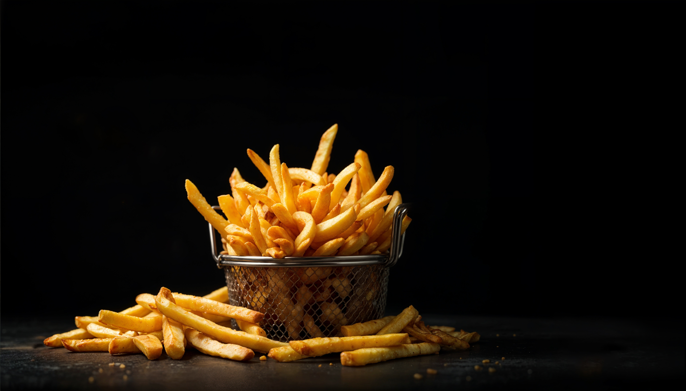

-----
HOME
-----
Fries

Description
French fries are a classic snack or side dish made from potatoes that are cut into sticks and deep-fried until golden and crispy. They’re enjoyed worldwide with ketchup, mayonnaise, or special seasonings. You can also bake or air-fry them for a healthier version.
Ingredients
- 3–4 medium potatoes
- 2–3 cups oil (for deep frying)
- ½ tsp salt (or to taste)
- Optional seasonings:
Black pepper
Chili powder
Garlic powder
Oregano/chili flakes
Peri-peri masala or chaat masala
Steps
- Peel and cut potatoes
- Peel the potatoes (or keep skin on for rustic fries).
- Slice into thin sticks of even size for uniform cooking.
- Soak in water
- Dry the potatoes
- First fry (low heat cooking)
- Season and serve